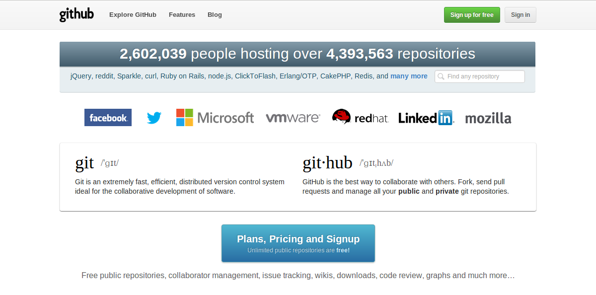
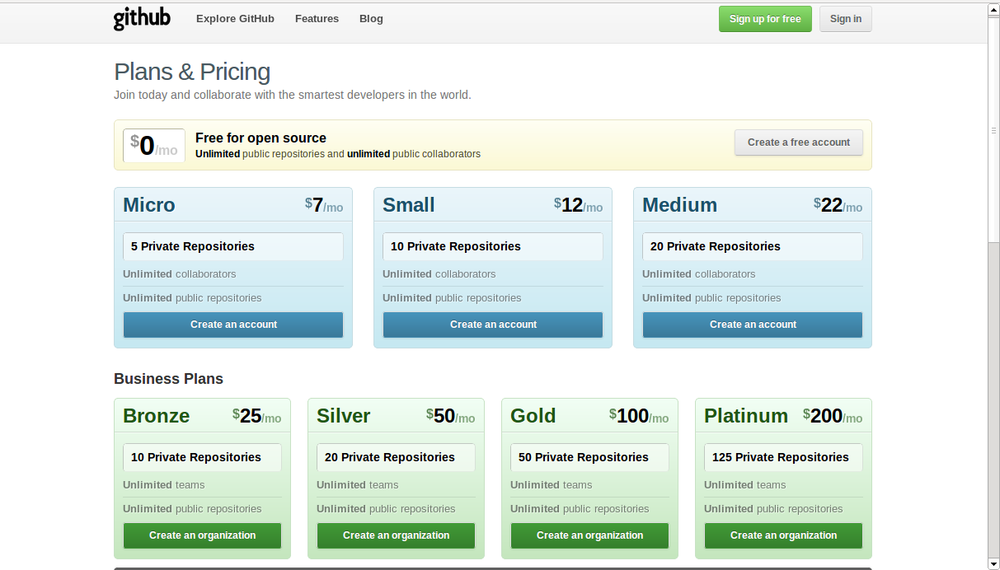
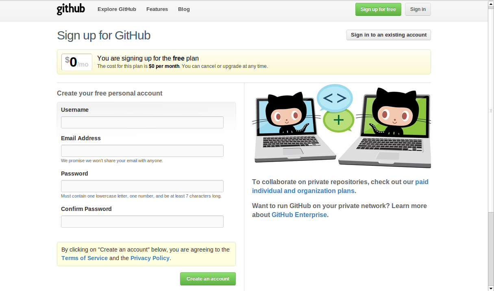

| 更新日付: | 2012 年 11 月 22 日 |
|---|
GitHub にアカウントを作成し、Ubuntu から使用する方法です。
GitHub のサイトにアクセスします。
無料プランを選択する場合は、右上にある「Create a free account」をクリックします。 有償プランを選択する場合は、「Plans, Pricing and Signup」をクリックし希望のプランを選択します。
簡単なアカウント情報を入力して、アカウントを作成します。 ユーザー名は半角英数字と「-」しか使用できません。また、「-」から始まるユーザー名は使用できません。
アカウントが登録されるとユーザーページが作成されます。
右上にある「Account settings」をクリックすると登録内容を変更することができます。
アカウントが作成されたら、「Account settings」の「SSH Keys」で SSH のキーを登録しましょう。
すでにキーがある場合は公開鍵「id_rsa.pub」の中身を登録するだけです。
キーがない場合には Ubuntu のターミナルを起動して ssh-keygen でキーを作成して公開鍵の中身を登録します。
$ ssh-keygen
Ubuntu には git のパッケージが用意されていて、簡単にインストールすることができます。
$ sudo apt-get install git
Ubuntu 12.10 では git 1.7.10 がインストールされます。
$ dpkg-query -l git
ii git 1:1.7.10.4-1ubuntu1 amd64 fast, scalable, distributed revision control system
Git の初期設定をします。
$ git config --global user.name 'n_nkmr'
$ git config --global user.email 'n.nkmrg@gmial.com'
$ git config --global color.ui auto
$ more ~/.gitconfig
設定ファイルは ~/.gitconfig に保存されます。
とりあえず、プロジェクトのレポジトリを作成します。
$ mkdir -p ~/git/myproject
$ cd ~/git/sphinx/myproject
$ git init
Initialized empty Git repository in /home/username/git/myproject/.git/
$ touch README
$ git add README
$ git commit -m 'first commit'
$ git remote add origin git@github.com:nnkmr/myproject.git
$ git push -u origin master
ファイルを更新したり、作成したりしたら、とりあえずコミットしておく。
$ git add .
$ git commit -m "COMMENT"
作業が完了したり、切りがついたら、サーバーに push して共有します。
$ git push
コミットの状況や過去の履歴は簡単に確認できます。
$ git status
$ git log
操作方法が分からなくなったら、help で確認することができます。
$ git help
{kind=link}
{kind=link}
{kind=link}